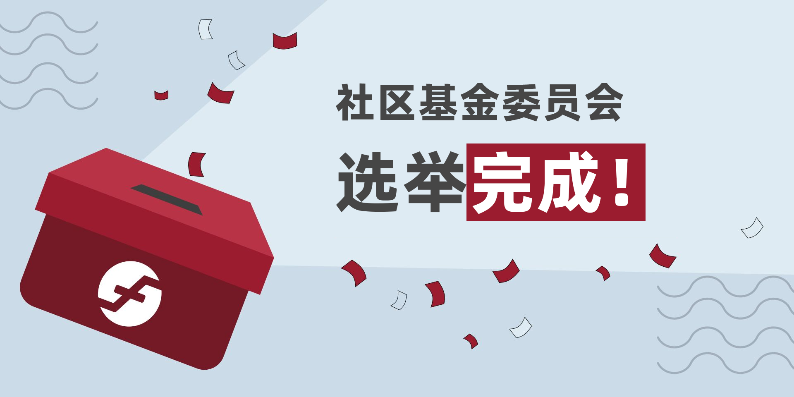

社区基金委员会选举完成

负责监督新成立的 Firo 社区基金（FCF）的 7 名成员社区基金委员会（CFC）的选举已经完成！
以下社区成员将担任 CFC 成员，任期为 6 个月：
当选的委员会是一个由成熟的社区成员、主题专家和开发人员组成的全面组合。我们要感谢社区的明智投票，以及所有为这一重要角色献身的社区成员。
Firo 社区基金由社区投票成立，通过授权社区直接从区块奖励的 10% 中获得资金来进一步分散 Firo 资金。
我们期待着看到 FCF 能够为 Firo 的发展做出什么贡献！
如何从 Firo 社区基金获得资助
任何人都可以通过在 Firo 众筹系统中开辟一个提案，同时在论坛上开辟一个主题，对其进行讨论，从而申请从 FCF 获得资助。
社区基金委员会也可以独立发起由 Firo 社区基金资助的提案。
社区基金委员会的职责是什么？
在考虑到社区反馈意见的同时，决定如何利用 Firo 社区基金。
为了帮助评估社区的资金申请，对申请资金的申请人进行尽职调查，并获得所有必要的信息，以确保工作范围的足够细节。
评估和批准支付里程碑的请求。
公开 CFC 批准/否决的所有理由。
CFC 可以请求核心团队对提案提供反馈和意见。
始终以专业精神行事，不诉诸于人身攻击或侮辱。
Firo 社区基金 (FCF) 将如何使用？
FCF 资金必须始终为 Firo 的利益而使用。不应开展不直接使 Firo 受益的研究、开发或推广活动。
所有 FCF 支出都必须披露。任何不允许这样做的提案都将无法从 FCF 获得资助。
即使是出于促进采用或参与的目的，FCF 资金也不应被用于赠送。
FCF 的资金不应用于举办纯粹的社交活动。教育或宣传活动可以接受，但必须是活动的主要组成部分。
应该使用 FCF 资金，虽然不应该有花费资金的压力，但也不应该囤积 FCF。
CFC 可以选择使用 FCF 来雇佣承包商来承担具体的任务或角色，并直接向 CFC 报告。
如果 CFC 认为合适，FCF 的资金可以通过发送到这个烧毁地址来烧毁。
FCF 资金地址可以在这里查看。
我在哪里可以看到社区基金委员会的审议情况？
关于 CFC 的所有讨论都可以在我们的 Discord 频道 #communityfund 中看到，并且是只读的。你需要通过验证码来验证身份，以查看该频道。